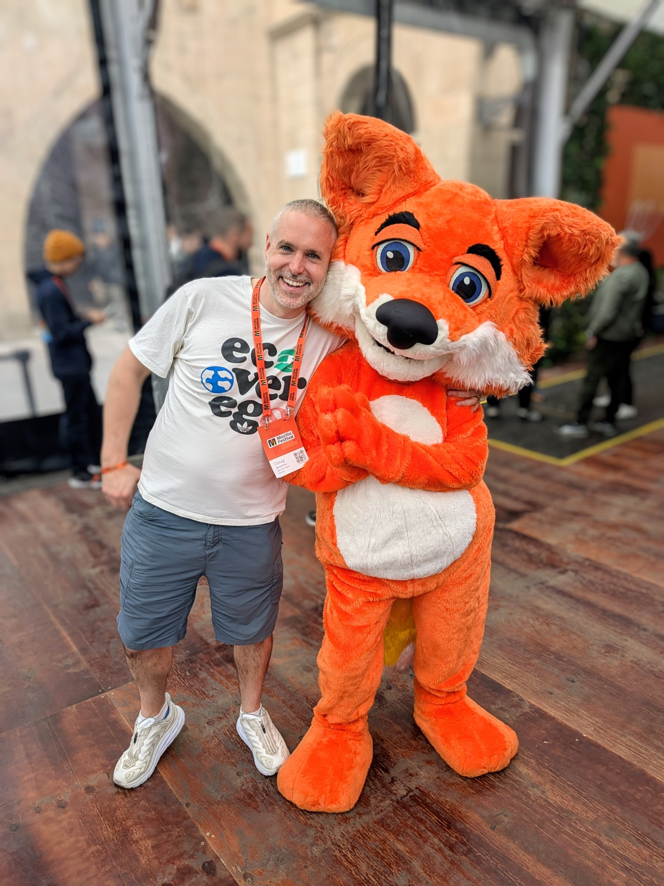
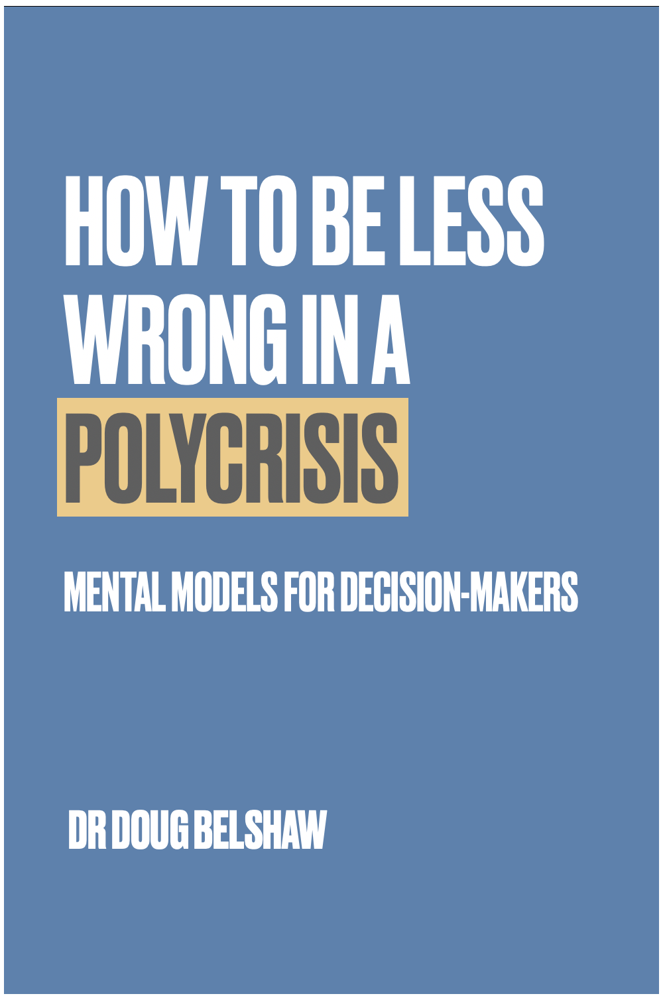

Dr Doug Belshaw
Systems thinker & occasional fox-hugger
I work with mission-driven organisations who want to think more clearly, act more openly, and trust their own judgement.

It’s rarely the first time someone’s noticed.
You’re doing important work. You’ve also, somewhere along the way, made technology decisions that felt reasonable at the time: a platform your funder preferred, a tool the last person recommended, a system nobody quite knows how to leave. It’s not that you don’t know something’s off. It’s that you haven’t had the outside perspective to see it properly, or the space to work out what to do about it. That’s where I come in.
Three areas of practice
Systems thinking & strategy
I help organisations step back from the operational noise and see the wider picture: where assumptions are baked in, what dependencies have built up, and where change is actually possible. This might be a Theory of Change process, cross-sector facilitation, or a structured programme helping you map and reduce your technology risks.
Recent examples
- Theory of Change with the Gates Foundation-funded SEBI-L team as part of their 10-year strategy
- TechFreedom: structured programme for social-purpose organisations on technology dependencies and digital sovereignty (co-delivered with Tom Watson)
- Cross-sector facilitation using sociocratic processes for LocalGov Drupal
Digital & AI literacies
Organisations working in education, civil society, and public media are being asked to engage with AI without much support in thinking about it critically. I work with teams to develop frameworks, build genuine capacity, and create resources that go beyond the hype in either direction.
Recent examples
- AI Literacies framework for the BBC’s Responsible Innovation Centre for Public Media Futures, co-authored with Laura Hilliger
- AI sustainability principles for Friends of the Earth
- Speaking and writing on AI and digital literacies, including contributions to Open Thinkering and Thought Shrapnel
Digital credentials
I’ve been working with open standards, learning recognition, and institutional change since the early days of Open Badges. Whether you’re a national awarding body, a university, or an employer looking to make credentials genuinely portable and trustworthy, I can help you work out what’s possible and what to do next.
Recent examples
- Digital credentials strategy with Skills Development Scotland and the Awards Network, working towards a national system of Verifiable Credentials
- Report for the Irish Technological University sector on the future of digital and micro-credentials
- Longstanding involvement with the Digital Credentials Consortium (DCC)
Values-led, curious, and first to the work that matters
I’ve consistently been the person to help build the conceptual infrastructure before everyone else catches up. Open Badges in 2011, before employers cared about alternative credentials. Digital and web literacy (anti-)frameworks before digital skills and AI literacy became policy priorities. Federated social networks before digital sovereignty was a board-level question.
I’m proud of this track record. I’m not a late adopter just implementing someone else’s framework because I built the frameworks and have stayed close enough to the technical reality to know when theory and practice diverge.
I’ve operated across three areas that rarely overlap: practitioner (classroom teacher, Director of E-Learning), researcher (Ed.D., Jisc, PGCert in Systems Thinking in Practice), and movement-builder (Mozilla, Open Badges community, co-operative working). Most people in this field are strong in one or two — very rarely in all three.
My intellectual outputs tend to last. The Essential Elements of Digital Literacies framework is still being cited and adopted fourteen years after the thesis. I've been writing my blog for over 20 years. MoodleNet forked into Bonfire and is still live. I build things that stay built.
- 2004–10 Secondary school teacher then Director of E-Learning at Northumberland Church of England Academy, a nine-site institution of 3,500 people, with a seat on the Senior Leadership Team.
- 2010–12 Jisc infoNet, based at Northumbria University, supporting national programmes in FE and HE. Completed an Ed.D. with a thesis on digital literacies.
- 2012–15 Mozilla Foundation: Badges & Skills Lead, then Web Literacy Lead. 50+ conferences. A standard adopted by IBM and others. 100+ stakeholders worldwide.
- 2014–now Dynamic Skillset Ltd: independent consultancy. Ten years of client work across education, civil society, and international NGOs.
- 2018–20 Moodle HQ: Product Manager, conceiving and delivering MoodleNet, the world’s first decentralised digital commons for educators.
- 2023–24 PGCert Systems Thinking in Practice (Open University), building frameworks and tools for making sense of a volatile, uncertain world — and bringing that into every client engagement.
What people say
Doug and I go way back to the early days of Open Badges. His 15+ years in this space means he brings not just expertise, but institutional memory and perspective that’s invaluable as the digital credentials field evolves.
I appreciate that Doug operates at multiple levels simultaneously. He understands technology deeply, and he’s equally comfortable navigating community dynamics and organisational change. Whether he’s presenting, writing reports on micro-credentials, or facilitating strategic planning sessions, he stays grounded in human-centred approaches and open practices.
Doug combines deep technical knowledge, facilitation skills, community-building expertise, and collaborative instinct. I’m grateful for everything he’s contributed to the DCC and to digital credentials more broadly.
More testimonials
Doug brings exceptional clarity of thought, deep expertise in digital literacies, and a collaborative spirit that elevates every session he’s part of. He’s equally at ease shaping big-picture strategy as he is engaging participants in practical, hands-on learning. Any team would benefit from Doug’s insight, integrity, and sheer commitment to meaningful professional development.
His work on pre-planning was timely and efficient, yet effective. I know from past experience that the day itself could have been a huge challenge but went really smoothly, mostly down to the sociocratic processes put in place by Doug. This is testament to the energy, enthusiasm and preparation that went into it.
Always really switched on. A sane voice around all things educational technology and standards and much more — always look forward to working in Doug-related space.
I took some mentoring sessions with Doug. I wasn’t expecting much because I thought I knew my service pretty well. I was wrong — Doug unearthed a lot for me to think about. I’ll be back for more.
Things I’ve made

How to Be Less Wrong in a Polycrisis
Most decision-making advice assumes a clarity that real situations rarely have. This ebook is for when things are tangled: practical tools for acting wisely when the right answer isn't obvious.
Get the ebook · Read the announcementAI Literacies for Young People
Co-authored with Laura Hilliger for the BBC’s Responsible Innovation Centre. Based on 40 frameworks and 35 expert interviews, a framework for supporting young people’s critical engagement with AI.
Read the reportDigital Credentials for the Irish TU sector
Report for the Irish Technological University sector examining how Open Badges v3 and the Europass framework can give learners portable, stackable credentials — with European comparisons and practical steps for institutions ready to move.
Read the reportHarnessing AI for Environmental Justice
Co-authored report for Friends of the Earth examining how AI can advance environmental goals, and the risks it poses. Sets out principles for responsible AI adoption in civil society.
Read the reportI build tools to improve my own consulting practice. They’re all free and open-source; use them if they’re useful.
Let’s talk
Stuck? The chances are I can point you in the right direction. I’m based in the UK and usually work remotely, though I travel for the right engagement. Retainers, single days, and multi-session programmes all welcome.
Check my availability